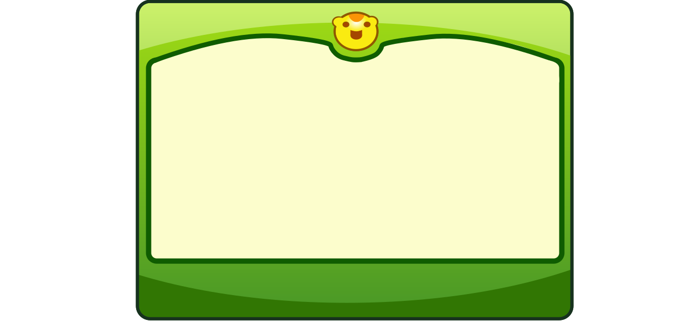

《奥比岛仓库》由玩家 @极限的哥哥 发起，并由所有热爱奥比岛的玩家共同维护。仓库中的所有内容均来自互联网公开信息。本仓库将永久保存有关“奥比岛”的一切，无论何时，小奥比们都可以来到仓库重温岛上的快乐时光。
《奥比岛仓库》由玩家发起并共同维护，内容来自互联网公开信息。
游戏内容版权归属广州百田 · CC BY-NC-SA 4.0

《奥比岛仓库》由玩家 @极限的哥哥 发起，并由所有热爱奥比岛的玩家共同维护。仓库中的所有内容均来自互联网公开信息。本仓库将永久保存有关“奥比岛”的一切，无论何时，小奥比们都可以来到仓库重温岛上的快乐时光。